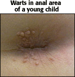

Sexually Transmitted Diseases Problem Set
Problem 5: STD Present in Most Diagnosed Cervical Cancer
Help to answer the question| Which of the following sexually transmitted diseases is present in most diagnosed cervical cancers? |
Tutorial
Human papilloma virus (HPV), smoking and cervical cancer|
Human papilloma virus (HPV), the virus that causes genital warts and microscopic cell changes in the genital area is also a risk factor for cervical cancer.
Although HPV is present in 97% of the diagnosed cervical cancers, this sexually transmitted disease has not be established as the cause of cervical cancer, but as a risk factor for cervical cancer. Studies also show that women who smoke are at a higher risk of developing cervical cancer than nonsmokers. There is an association between smoking and the presence of HPV in cervical lesions and the prevalence of the virus increases with the number of cigarettes smoked daily. The mechanism by which smoking effect the prevalence of HPV in cervical lesions is not completely understood, but the theory is that smoking might facilitate infection and the persistence of the virus rather than cause the changes in the cervical cells. |
| HPV is transmitted by direct contact with the warts or lesions. Condoms offer limited protection as the warts might be on parts of the body not covered by the condom. |
|
Warts Genital warts are painless, flat or cauliflower-like growths that can be seen or felt on the genital area of both men and women. Warts can also be present inside the vagina, on the cervix, or in the anus. In those cases, the warts are detectable only by physical examinations. The example on the right shows warts near the anus of a young child. The child was infected by his mother at birth. |
 Used with permission of © Dr. Norm Levine |
|
Microscopic lesions
The symptoms of infection might not always be obvious. The virus may express itself as microscopic cell changes in the genital area that may only be diagnosed through medical examinations, tests, and pap smears. They might be lesions on the external genital organs of both men and women and they are also found on the cervix and in the vagina. |
|
| There is no known cure for the human papilloma virus at this time and treatment consists of the removal of the warts or lesions by laser, cryotherapy (freezing), or chemical treatment. Treatment is more successful on warts that are small and have been present for less than 1 year. Although the symptoms might have been removed successfully, the virus remains present and there might be recurrence of the symptoms at any time. Yearly pap smears are strongly recommended for all sexually active women to check for recurrences and for early detection of abnormal, precancerous, or cancerous cells. |


University of Arizona
Wednesday, September 30, 1998
Contact the Development Team
http://biology.arizona.edu
All contents copyright © 1998. All rights reserved.